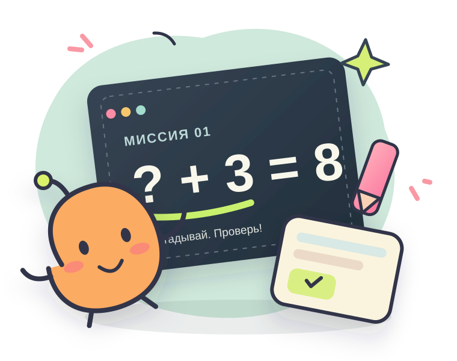

Ты уже умеешь думать.
Научимся проверять.
Не нужно помнить школьную программу. Не нужно знать ни одной команды. Здесь мысль сначала становится понятной, потом — формулой и только после этого — кодом.
Можно медленнее. Можно вернуться.

Что происходит и почему?
Находим точную запись.
Пробуем в настоящем действии.
У коробки есть секрет
Не вспоминай правила. Просто представь ситуацию.
В закрытой коробке были яблоки. Мы положили туда ещё 3 яблока. Теперь их 8.
Сколько яблок было в коробке сначала?
Не бойся ошибиться. Проверка здесь важнее угадывания.
У загадки появляется имя
Теперь запишем ту же историю короче. Никакой новой задачи.
x — просто имя неизвестного количества. + — добавили. = — с обеих сторон одно и то же число.
Так что же означает x?
Выбери ответ. У тебя нет лимита попыток.
Код — это просто инструкция
Компьютер не догадывается о твоих намерениях. Он читает точную запись.
Нажми «Запустить» — здесь появится результат.
Пусть компьютер сложит 4 и 3
Измени код так, чтобы он сам сложил числа и показал 7. Можно начать с примера «Сложение». Потом нажми «Запустить» и «Проверить решение».
Вместо готового ответа внутри print( ) напиши 4 + 3. Кавычки для чисел не нужны.
Здесь важно действие, а не скорость.
Не нужно понимать всё сразу.
Одно понятное действие важнее десяти непонятных лекций. Можно вернуться к любому шагу и попробовать снова.
Уметь рассуждать — начало.
Уметь проверять — следующий шаг.
Здесь учатся дети и взрослые. Те, кто не знает код. Те, кто создаёт проекты с ИИ, но хочет понимать решения, замечать ошибки и не зависеть от чужой уверенности. Мы не обещаем сделать из тебя «сеньора за месяц». Мы учимся превращать догадки в проверяемые действия.